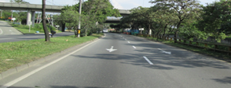
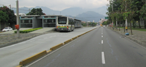
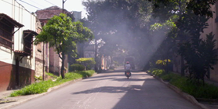
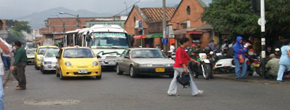
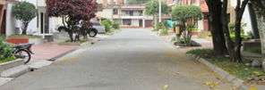

La jerarquía de las calles en Medellín debe ser acorde a la jerarquía establecida por el POT, la cual podemos encontrar en el Mapa de segmentos viales en el Geoportal de Medellín.
La equivalencia de la jerarquía utilizada por la Secretaría de Infraestructura se debe comparar con las etiquetas existentes en OSM: (https://wiki.openstreetmap.org/wiki/Map_Features#Highway)
|
TIPO |
DEFINICIÓN |
FOTO Y ETIQUETA EN OSM |
|
AUTOPISTA |
Son vías rápidas de alta capacidad y largo recorrido, que se caracterizan por tener calzadas separadas, accesos y salidas controladas, y todas sus intersecciones a desnivel. En Medellín, el único eje con características de autopista urbana, es el sistema vial del corredor multimodal de transporte del río Medellín. (Ej.: Autopista Sur) |
 |
|
highway=trunk |
||
|
ARTERIA PRINCIPAL |
Su función principal es movilizar el flujo vehicular de largo recorrido dentro del área urbana, uniendo entre sí las diferentes zonas de la ciudad. El sistema vial arterial principal para la ciudad de Medellín, estará conformado por el anillo bidireccional del centro, un sistema de vías en dirección norte-sur que corresponde casi totalmente al sistema vial metropolitano, y un sistema de vías en dirección oriente-occidente, que cruza a desnivel sobre el sistema vial del río Medellín (Aburrá). (Ej.: Avenida Guayabal, Avenida 80-81, Carrera 65) |
 |
|
highway=primary |
||
|
ARTERIA MENOR |
Cumplen funciones similares a las vías arterias principales y en algunos casos presentan características semejantes a éstas, pero con menor alcance (longitud).
(Ej.: Carrera 70; calle 1 Sur, entre la avenida Bolivariana y la Longitudinal Occidental; Loma Los Balsos, entre la avenida 34 y la Longitudinal Oriental) |
 |
|
highway=secondary |
||
|
COLECTORA |
Es el conjunto de vías que distribuyen y canalizan el tránsito vehicular hacia o desde el sistema arterial hasta diferentes sectores urbanos, en forma directa o con intervención complementaria de las vías de servicio. Generalmente unen vías arterias entre sí, y deben atender volúmenes de tránsito moderados, incluyendo el transporte público colectivo. (Ej.: Calle 57, La Paz) |
 |
|
highway=tertiary |
||
|
SERVICIO |
Es el conjunto de vías vehiculares cuya función principal es facilitar el acceso directo a las propiedades o actividades adyacentes, perdiendo importancia la función de movilidad. Para este sistema de vías debe restringirse (en lo posible) el transporte público y de carga, y la velocidad permitida estará condicionada al desarrollo de las actividades y flujos peatonales existentes. (Ej.: Calle 30B) |
 |
|
highway=residential |
Fuente: Plan de Ordenamiento Territorial Medellín (2006), pp. 77-78.